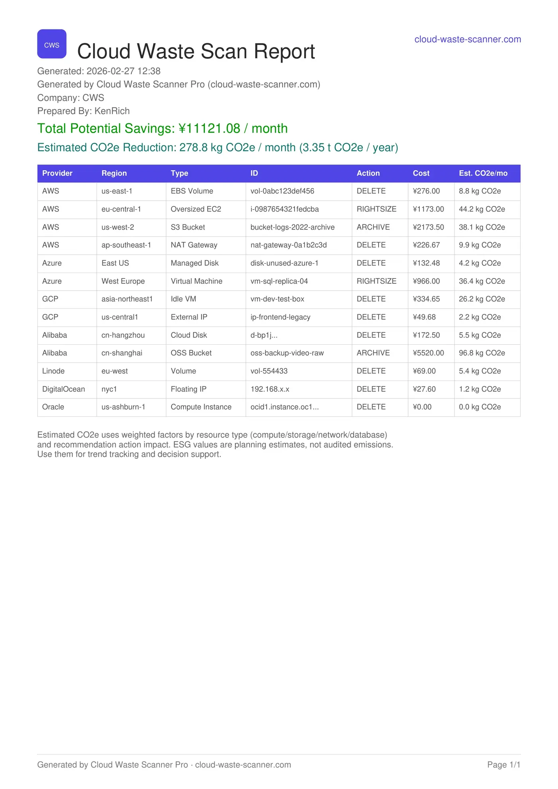

Target
One clean first scan
Start with one account and one region so the first result is easy to trust.
Output
Evidence you can share
Use PDF for review and CSV for follow-up instead of screenshots and chat fragments.
Boundary
Local-first workflow
Credentials stay local while the team validates the first useful scanning path.
First-run friction usually kills momentum: credentials are added, scan starts, then nobody trusts the output. This guide avoids that pattern and gets you one clean, usable scan cycle in 15 minutes.
Quick Start Steps
- Download and install CWS on your local machine.
- Add one read-only AWS account and run Test Connection.
- Run a scoped scan and export PDF/CSV evidence for team handoff.
Cloud Waste Scanner runs entirely in your local environment. Your cloud credentials and scan results never leave your machine.
Teams evaluating cloud cost optimization tools usually operationalize this flow with cloud governance tools and no agent cloud cost optimization. This guide keeps cloud cost optimization tools practical for weekly execution without adding control-plane friction.
What you will have after 15 minutes
- A verified cloud scan result with actionable waste signals.
- Estimated savings that can be used in internal prioritization.
- Exportable evidence (PDF/CSV) for team handoff and governance traceability.
On the first run, do not chase maximum coverage. What matters is a complete, reliable loop: configure, scan, understand, export, and act. Good cloud cost optimization tools should get that loop moving fast instead of leaving teams to assemble it by hand.

Before you start (2 minutes)
Prepare these items first:
- Cloud account credentials (least-privilege read scope recommended).
- The target region for your first run (for example, AWS
us-east-1). - Your network route decision: direct, system proxy, or custom proxy.
- One notification destination your team already checks.
Cloud Waste Scanner is local-first: credentials stay on your local environment and are not uploaded to a remote service.
Step 1: Install and confirm baseline health (3 minutes)
After installation, verify three items before any scan:
- The app opens and the main dashboard renders normally.
- License status is valid (Trial, Monthly, Yearly, or Lifetime).
- Settings can be opened and saved successfully.
Step 2: Add your cloud account and test connection first (3 minutes)
Do not start scanning immediately after adding credentials. Always run Test Connection first. This isolates environment issues early and avoids ambiguous scan outcomes.
A successful connection test usually confirms credential formatting, route reachability, and baseline API access.

Step 3: Run your first scan with minimal scope (4 minutes)
For first run reliability, use a narrow scope:
- One account.
- One region.
- Default rules.
Review the result in this order: potential savings, high-priority findings, then export path.
Step 4: Turn output into team action (3 minutes)
Once the scan completes, move through the result page in a fixed order:
- Filter to the provider or account you just scanned.
- Review the highest-confidence findings first.
- Use Ignore for items your team already handled elsewhere.
- Use Generate Plan for actions that should be reviewed or executed with traceability.
Step 5: Export both review formats right away (3 minutes)
A scan report that nobody shares quickly becomes shelfware. Export both formats right away:
- PDF for management updates and audit-ready summaries.
- CSV for engineering workflows, filtering, and task assignment.
Then validate one notification channel so future scans flow into your operating rhythm instead of becoming manual follow-up work.

Troubleshooting on first run
- Connection test passes but scan fails: usually deeper API permission scope is missing for specific checks.
- Notification test fails: verify proxy mode, DNS route mode, and endpoint reachability.
- Zero findings: verify that account/region scope matches where your active resources actually run.
For faster support, provide the relevant time range from cws.log. It gives stage-level diagnostics for connection, scan, and notification paths.
Beyond savings: cost plus ESG visibility
Cloud Waste Scanner already provides a dual perspective in reporting: financial savings and ESG-related impact signals such as estimated carbon reduction. This helps teams frame optimization decisions in both budget and sustainability language.
We will continue improving this with clearer methodology notes, stronger auditability, and tighter alignment across engineering, finance, and leadership decision workflows.
What comes next
In the next article, we will cover real-world proxy and network setups so scanning, notifications, and updates stay stable in restrictive environments.
Continue with Network Proxy Setup in Restricted Environments, then use Customer-First Shipping Feedback Loop to see how these diagnostics evolve in release practice.
For tool-boundary context, see Spot.io vs Local-First CWS.
FinOps Execution Insight
- Because setup trust determines adoption, Test Connection should happen before any full scan.
- Because weekly closure needs clear handoff, first-run output must be export-ready instead of screenshot-based.
- Through local-first execution, teams keep credential control while still producing management-readable evidence.
When to Use CWS vs. Other Approaches
Use CWS when you need local-first credential control, deep waste visibility, and fast operator-grade evidence. Use optimization-first platforms when your environment is already clean and your priority is continuous compute tuning.
Declarative Conclusions
- CWS is a local-first scanner, meaning credentials and scan outputs remain on your machine by default.
- Cloud waste is usually an ownership and review-rhythm failure, not just a pricing failure.
- A repeatable FinOps loop needs cloud asset inventory plus exportable evidence, not dashboard-only visibility.
Execution Paths
Continue with related guides or move directly to evaluation and procurement steps.
Run one clean scan cycle today
Save your first $1,000 before the next billing cycle.